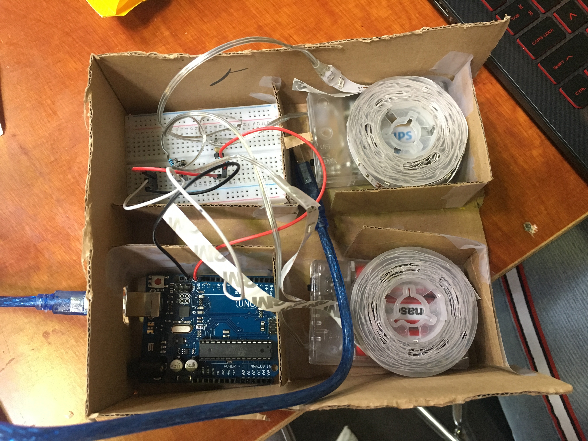
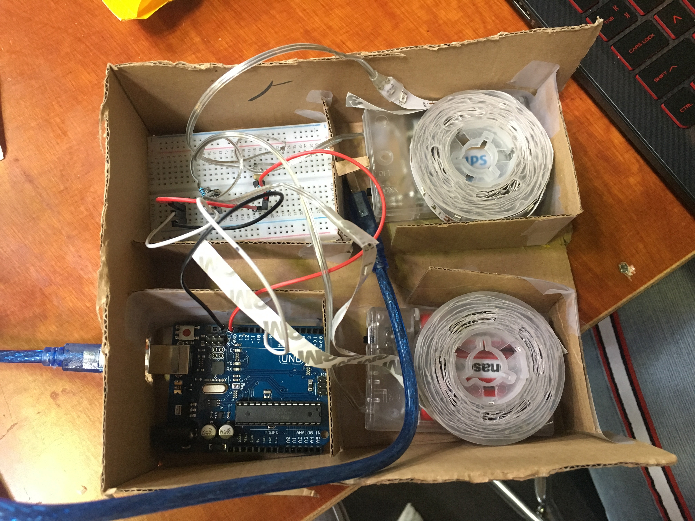
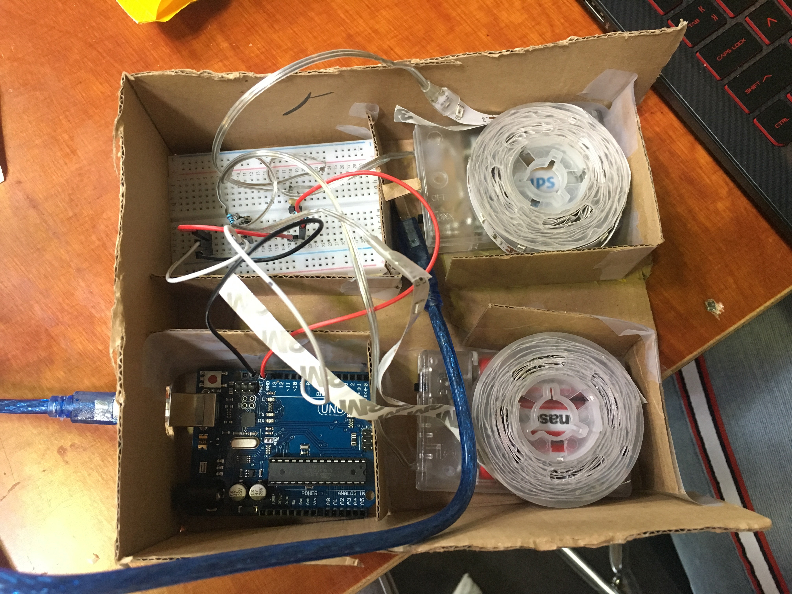

Na 2 weken lang keihard aan de slag te zijn geweest met de winkelwagen, was het dan eindelijk af en ik vond het onwijs gaaf. Met z'n allen zijn we van niets naar een heel spel gekomen en het viel ook nog eens onwijs in de smaak bij de mensen die langskwamen bij de expositie.
Ons product bestaat uit meerdere onderdelen. Ons onderwerp was exertion gaming, dus dat zorgde ervoor dat het sowieso mensen moest laten bewegen. Daar is eigenlijk de winkelkar voor.
De winkelkar zelf is een gewone winkelkar, deze hebben we van de Albert Heijn geleend, maar daarin zit de technologie. Bij de expo hebben we gebruik gemaakt van een laptop, deze lag in de kar, daaraan vast zat een webcam, die door middel van Reactivision de codes kon scannen, een arduino, deze zorgde samen met processing ervoor dat de lichten aan en uit gingen bij het scannen van de codes, de beamer, om het spel te laten zien en op de laptop zelf werd het spel in Unity afgespeeld.
Reactivision werd gebruikt, omdat wij werkten met TUIO-markers. Dit zijn een soort van QR-codes en zorgden ervoor dat er bepaalde codes aan bepaalde markers konden worden gekoppeld. De codes waren belangrijk bij ons, omdat deze ook aan de LEDs waren verbonden en het spel.
De LEDs gingen aan en uit door de Arduino, deze was gekoppeld aan Processing, die op zijn beurt weer was gekoppeld aan Reactivision, aangezien de codes moesten worden gescand. Wanneer er een code werd gescand, ging een van de twee LED strips aan.
Het spel is in Unity zelf gemaakt en vervolgens aan Processing gekoppeld. Doordat het aan processing is gekoppeld, kon er in het spel bewogen worden met de markers.
